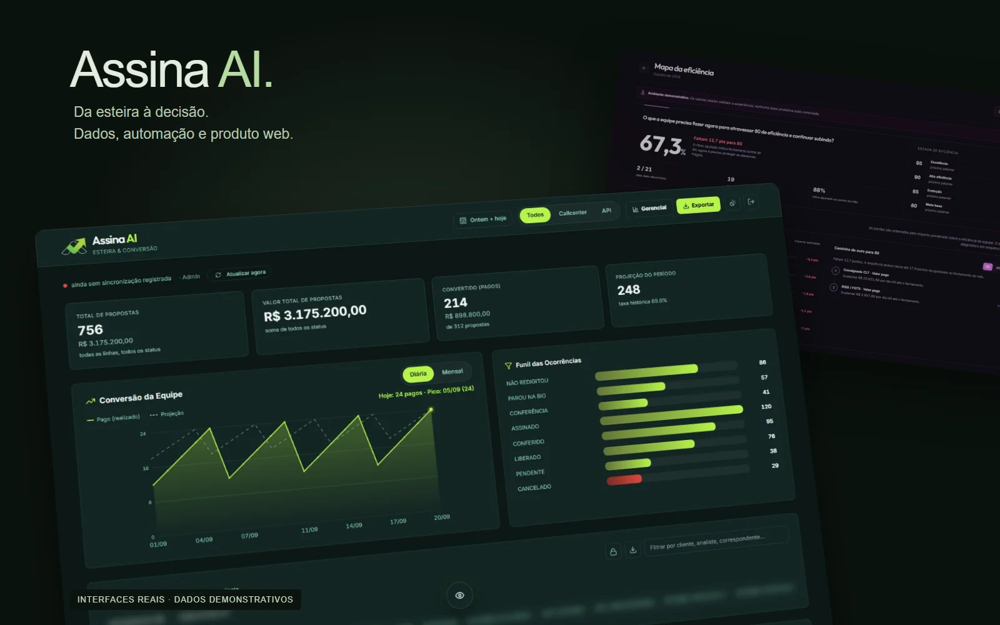
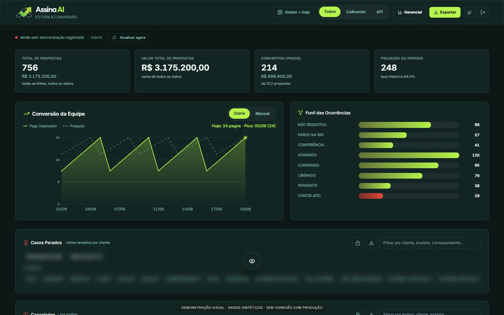
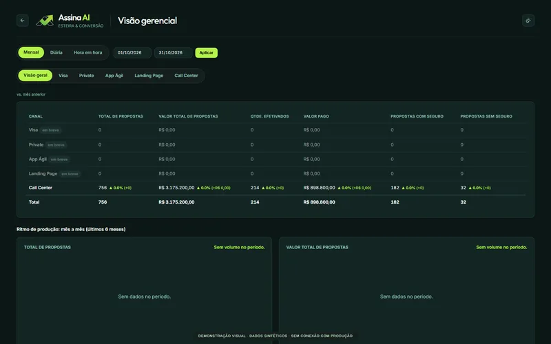
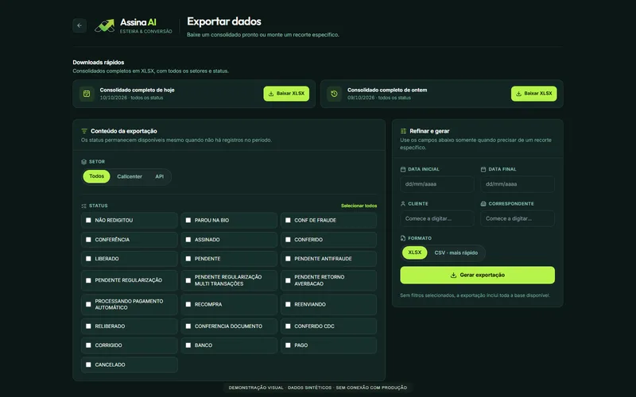
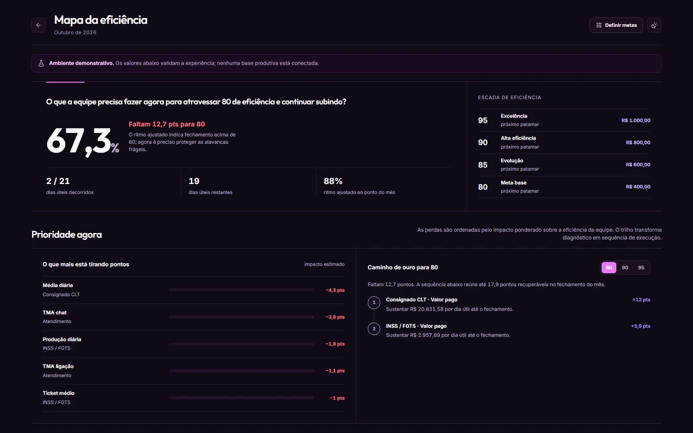

Assina AI
From scattered proposal records to a connected view of the operation: data collection, management reporting, and follow-up in one web application.
Operational project · Qualitative business outcomes reported by the developer
- Challenge
- Stalled proposals and fragmented spreadsheets made follow-up and operational reporting labor-intensive.
- My contribution
- Built the data collection and processing workflow, Apps Script business logic, and web interface for operational and management reporting.
- Outcome
- Saved staff time, removed manual steps, and helped recover stalled cases that contributed to a higher volume of financial activity. No quantified uplift is claimed.

An operational view that leads to action
Tracking proposals means connecting statuses, contact attempts, conversion, payments, and performance. The application brings these views together so users can investigate a case without assembling the context across separate spreadsheets.
The operational use saved time and reduced manual steps, while visibility into stalled cases supported renewed follow-up and a higher volume of financial activity. These are qualitative outcomes reported by the developer; the screenshots use synthetic data.

From collection to decisions
Python collects and processes source data and synchronizes it with Google Sheets. Apps Script applies business rules and provides the web interface with funnel, conversion, comparison, and export data.
Collection, business rules, and presentation remain separate layers. The frontend adds search, sorting, and filters for the records available to the user.


A clear boundary between operation and demonstration
The efficiency map explores results, weighted losses, priority actions, working days, and efficiency thresholds across three operations.
This specific target-planning interface is a demonstration. Its definitive indicator source still needs to be integrated. Scores and bonuses shown here are illustrative, separate from the reported operational benefits of the wider application.

Access controls and continuity
The application distinguishes Admin, Supervisor, and Operator roles. It validates sessions and restricts resources by permission, with additional protection for operational blocks.
Preloading and caching prepare complementary views. A shared interface connects indicators, management comparisons, and exports while preserving operational context.
Need a similar capability on your team?
I work across data, automation, and web development, connecting technical decisions to everyday operations.
Email LucasLinkedIn